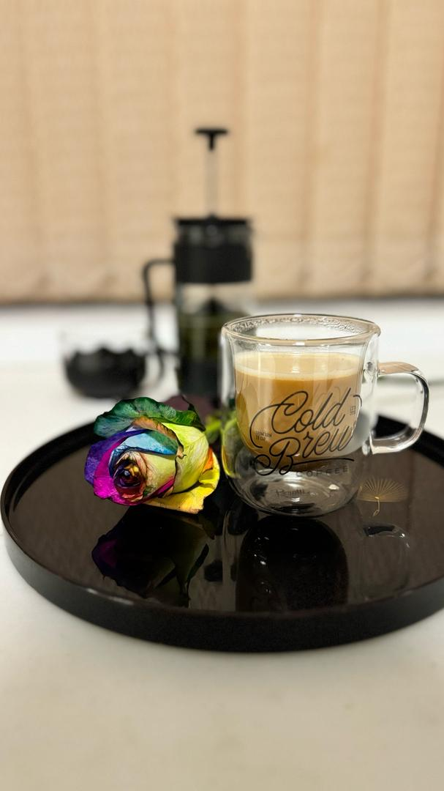
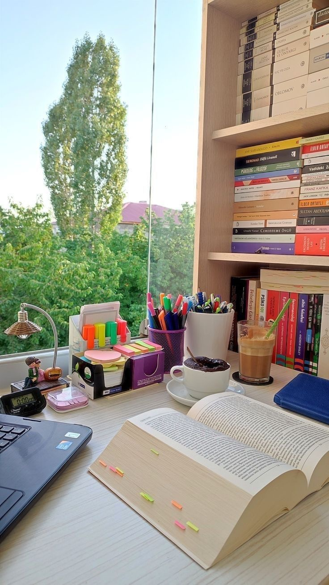
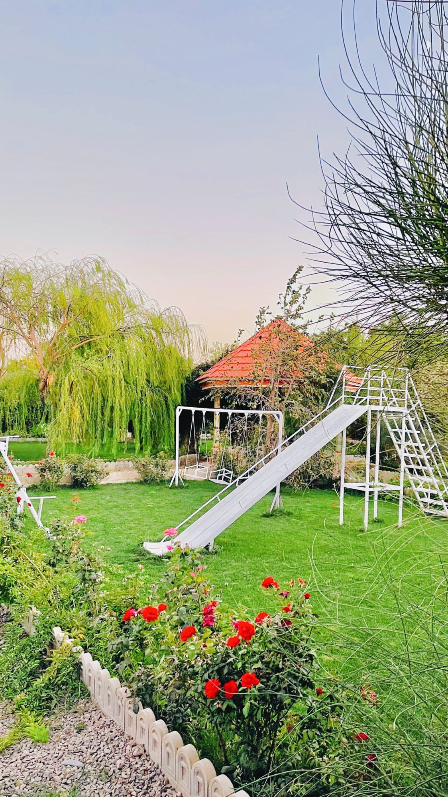
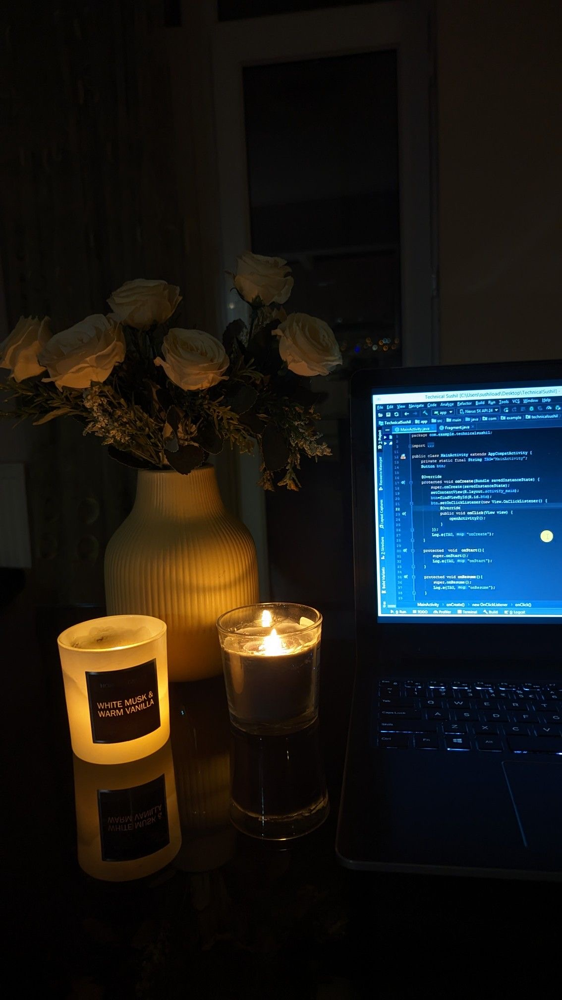

Thess pictures are my favorite because each picture represents a different feeling for me.

"A hot cup of coffee, next to some fresh flowers…
There is no hustle and bustle, no dos and don'ts.
Just me and this simple and pure moment,
in which I take a sip of peace and, with the scent of flowers, I remember that the world is still beautiful…
Much more beautiful than we sometimes forget."

The real efforts always happen behind the scenes… This table is the silent but vibrant stage of my growth.

Every step in nature means a sip of peace

Sometimes a candle and a laptop are enough to give birth to a thousand dreams…
All creations start from a small light